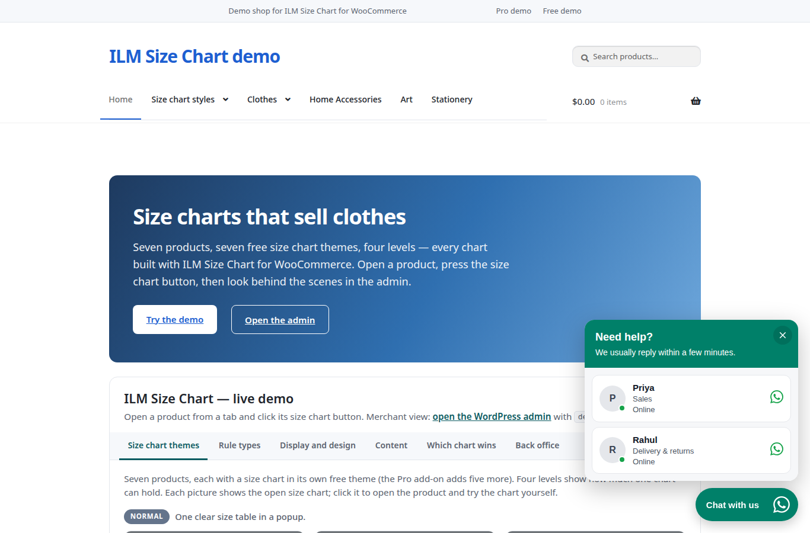

Chat widget
2.1 Turn the widget on
The chat widget is the floating button on your shop. A shopper clicks it and a chat panel opens.
- Show the chat widget on the shop: turns the floating button on or off. Add at least one agent first, on the Agents tab.

2.2 Button look and place
- Position: Bottom right or Bottom left.
- Icon: WhatsApp, Chat bubble or Headset.
- Button colour: the colour of the round button.
- Icon and text colour: the colour of the icon and the button text.
- Button size (px): from 40 to 80.
- Distance from side (px): from 0 to 200.
- Distance from bottom (px): from 0 to 200.
2.3 Texts
- Button text (desktop): the text next to the icon on computers. Leave it empty for an icon only. Phones always show the icon only.
- Chat window title: the heading at the top of the chat panel.
- Chat window subtitle: the small line under the title.
2.4 Greeting bubble
The greeting is a small bubble above the button. It shows once per visit and the shopper can close it.
- Show a greeting above the button: turns the greeting on or off.
- Greeting: the text in the bubble.
- Show after (seconds): how long to wait before it appears, from 0 to 120.
- After scrolling (%, 0 = off): show it after the shopper scrolls this far down the page, from 0 to 100.